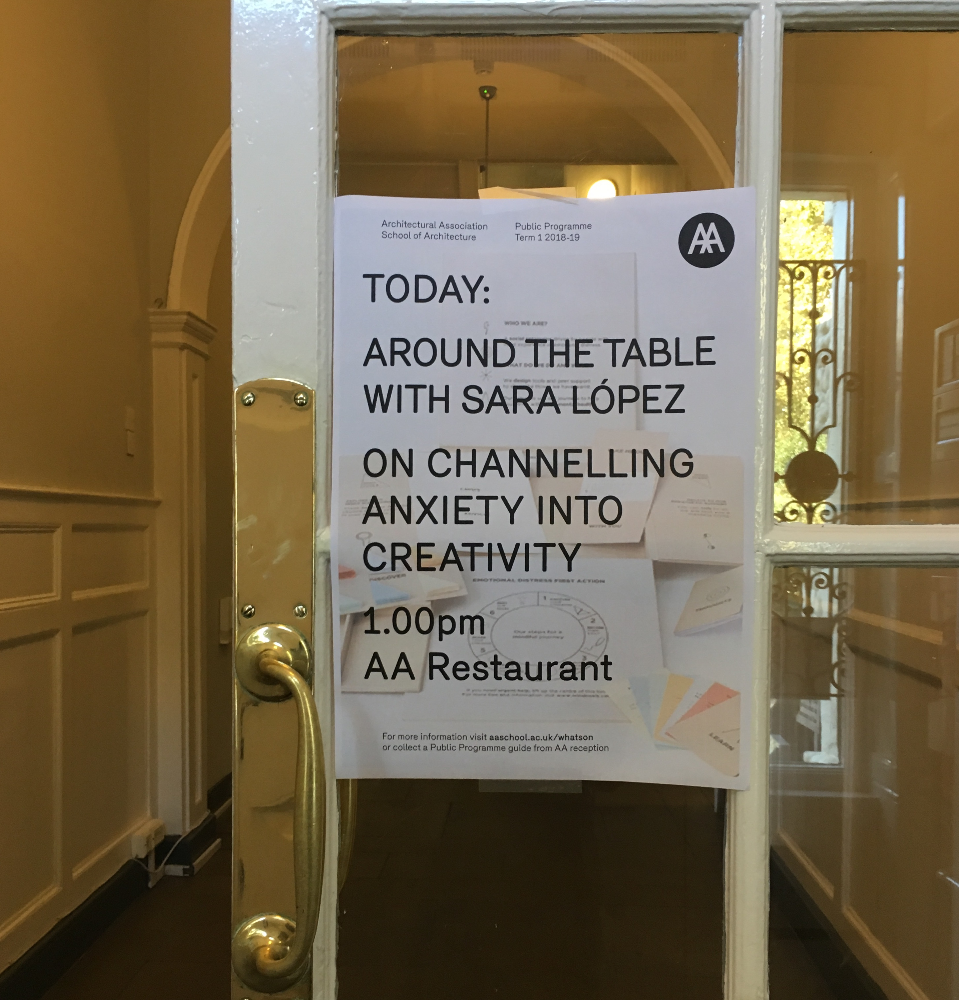
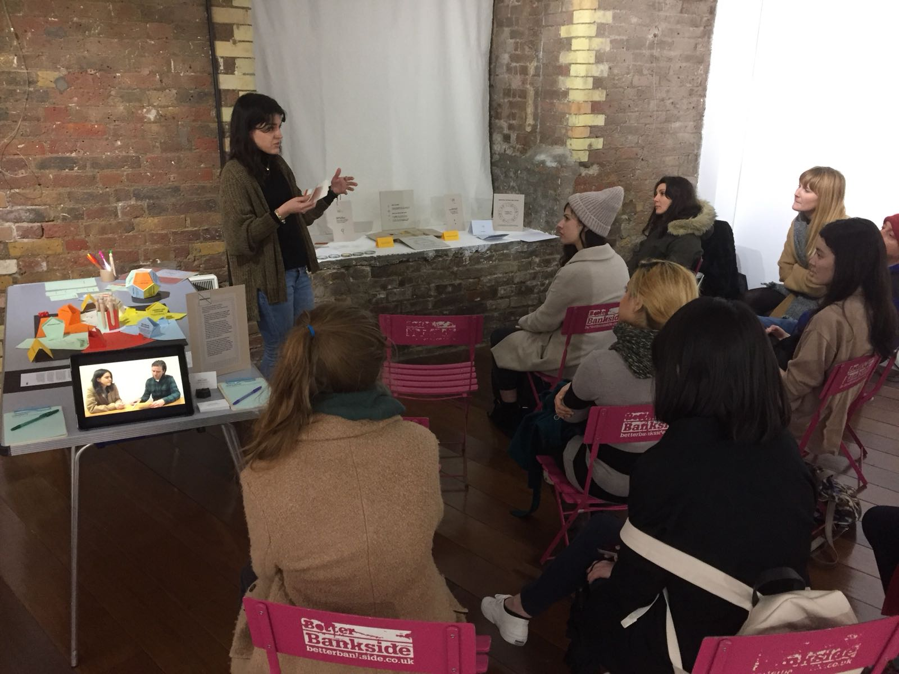

/about
I'm Sara, a designer, researcher and facilitator who untangles complex problems, visualises them clearly, and brings people along to solve them.
For the past six years, I've grown from individual contributor to design lead at Kaluza, working across design systems, journey mapping, information architecture and design management along the way.
Before that, I worked with local authorities, health charities and nonprofits on wicked issues like mental health, homelessness and social care. Different sectors, different constraints, but the same starting point every time: put the people affected at the centre of the process, not just the brief.
I lean on research to find the real shape of a problem. Visuals do most of the translating after that.
Since 2016, I have kept a self-initiated practice in design and wellbeing.
Explore Mindnosis →Timeline
In public
talks & guest lectures
Design Change Makers
Central Saint Martins · 2019
On channelling anxiety into creativity
Architectural Association · 2018 · photos
Designing with publics
Central Saint Martins · 2018
exhibitions, collaborations & workshops
features
Mental health ↗
Computer Arts issue 286 · 2018
+ more press
Mindnosis kit helps people overcome mental health issues ↗
Dezeen · 2017
Eight of the most thought-provoking design responses to mental health ↗
Dezeen · 2017
Meet the designer creating an alternative way to discuss mental health ↗
Metro · 2017
Mindnosis kit designed to help people overcome their mental health issues ↗
Walkalong · 2017
Mindnosis ↗
Trend Hunter · 2017
Creative Conscience ↗
Creative Lives in Progress
Design Change Makers: creativity and the challenges of mental health ↗
Working Progress
awards
Creative Conscience Award
Creative Conscience · 2018




Have a problem worth untangling?
let's talk →